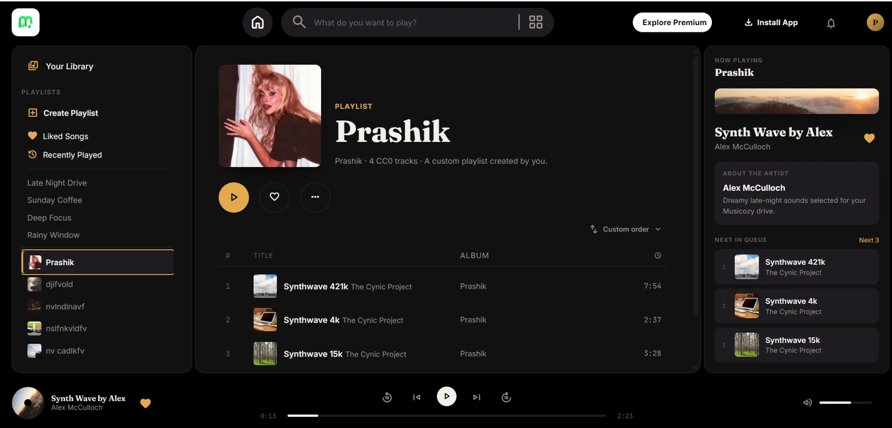

01 / FEATURED PROJECT
Musicozy

A music player built around my love of finding a good song. Custom playlists, saved likes, search, and keyboard controls come together in a responsive three-panel interface.
- HTML5
- CSS3
- JavaScript
- HTML Audio
Saving custom artwork. I used IndexedDB for uploaded playlist covers, keeping large image files out of localStorage, which holds likes and settings.